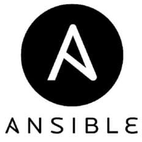

Daniel Brownridge
Software Architect, Yobota
January 2019
Daniel Brownridge
Software Architect, Yobota
January 2019
This talk will not be about:
This talk will be about:
We have some problems to solve:
Loads of differences between development environments and production infrastructure:
Testing code is hard enough, but how do you test a multi component system?
Even if they exist, people don’t or won’t or mis-read instructions
Development involves breaking things
Bug-fixing can put your environment in a weird state
But it works on my machine!
Hack it till it works but:
- can’t remember or
- don’t understand or
- don’t care
… how or why it works?
People install random things because they need to or feel like it
- stress and frustration
- really hard to reproduce bugs
- bugs are caught late in the day
- wasted time investigating non-issues
- lower quality of code
- reluctance to experiment for fear of failure
It is not a complete solution to everything, but what if:
A simple idea:
A resource can mean:
Not a new concept:
A big topic:
- Many different kinds of virtualization
Key ones we are going to focus on are:
- Hardware
- Operating System
Basic idea is:
Goal is:
How do you do this?
Theory is:
Implementation can be:
Simple idea:
Advantages:
Use cases:
It works very well, however …
What is the problem with simulating hardware in software?
Key point:
Limited to quite specific situations
Useful in situations where:
Consequences are:
Implementations:
Goal:
Basic idea:
Problem:
So how can this work?
Two main approaches hypervisors take:
A form of hardware virtualization where the hypervisor provides:
Operating Systems are modified very slightly to use the Hypervisor API
Xen Project
Basic idea:
How it works:
Represents a major breakthrough:
In many ways this technology triggered the modern era of cloud computing
Escapes the trap:
How it works:
Consequences:
Two main categories of hypervisors:
Type-1 - native or bare metal hypervisors
Type-2 - hosted hypervisors
Virtualbox is a Type-2 hypervisor:
Many compelling features:
What can you do with it?
Graphical:
Servers:
Operating System virtualization is also known as containerization
Goal:
How it works:
Consequences:
Docker performs operating system level virtualization
A managing process controls containers - dockerd
Images are downloaded and then registered:

Which should I use?
Bottom line:
Solution?
Heroku does this:
Virtualization techiniques make many things possible but:
Solution:
Basic idea:
Consequences:
Core goal:
Key features:
Vagrantfile:
#!/usr/bin/env ruby
Vagrant.configure("2") do |config|
config.vm.box = "ubuntu/xenial64"
config.vm.hostname = "interaction"
config.vm.network "forwarded_port", guest: 5000, host:5000, id: "heroku_local"
config.vm.provision "ansible" do |ansible|
ansible.galaxy_role_file = "requirements.yml"
ansible.playbook = "playbook.yml"
end
end
Run it:
$ vagrant up
Vagrant lets you delegate the actual configuration of the machine to a provisioner
Basic idea:
Options:
Basic idea:
How it works:
Just needs SSH and Python
Maintains an inventory of target hardware (more relevant to hosted infrastruture)
A file called a playbook says what happens where
Playbooks can be segmented into roles

playbook.yml:
---
- hosts: all
roles:
- ansible-role-pgadmin4
- ansible-role-redis
- ansible-role-rqdashboard
- ansible-role-minio
- ansible-role-prometheus
- ansible-role-heroku
- ansible-role-sphinx
- ansible-role-django-project
main.yml:
- become: yes
block:
- name: docker image
docker_image:
name: dpage/pgadmin4:snapshot
- name: docker container
docker_container:
name: pgadmin4
image: dpage/pgadmin4:snapshot
network_mode: host
env:
PGADMIN_DEFAULT_EMAIL: vagrant
PGADMIN_DEFAULT_PASSWORD: vagrant
PGADMIN_LISTEN_PORT: 5050
restart_policy: always
Sharing roles between projects can be a challenge
Basic idea:
Ansible Galaxy lets you manage roles:
Together this toolset integrates very nicely and essentially give you Heroku on your own laptop